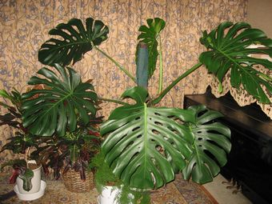
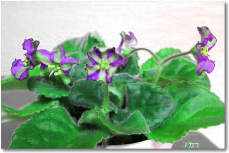
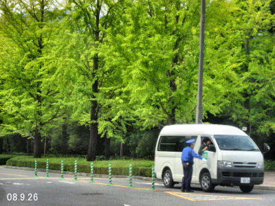
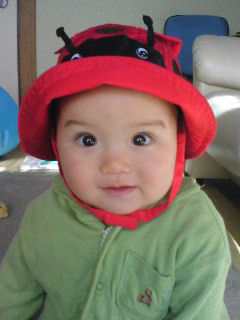

カーテンの向う 鉢植 マラコイデス |
１２月３０日 後一日で今年が終ります。この一年有難うございました。 一人暮しは気楽で自由だからとつぶやくのですが実のところこの世相も重くて鬱気味です。 今日 庭の落ち葉を掃き集めようとしたが明日の朝にまわして生活必需品（紙ごみ袋など）買いに少しはなれたスーパーまで車で向かった。 いつもの散歩道を過ぎた辺りで事故が有ったらしい、車を運転していたらしい女性が倒れた自転車の女の人に手を置いてしゃがんで携帯をかけて居る。事故直後のようだった。ひと事では無い！ と、通り過ぎたが、スーパーでも何やら殺気立った光景を見た。 帰宅したらＹＫさんからこの団地の入り口で事故が有ったと℡が有った。 私の留守電で心配をかけたようだ。 昨日は土仕事をした、遅まきながらえびねに鹿沼土と腐葉土を混ぜて上から撒いたり、この寒さに勢いのよい白のプリムラ・マラコイデスを大きな鉢に移しました。 セントポーリアもオプチマラの植え替えを済ませた。 あとは、年賀状です。 私の好きな方々から喪の葉書が多く届き すっかりやる気をなくしました。 私はちょっと長く生き過ぎたみたいです！？ 「新しいテレビ」 は、あまりにもリアルに写り、ぼかしをかけたいと思う事しばしばです。でも録画等操作は楽で、先週日曜美術館でモジリアニをとりました。 今 ラジオを使う習慣をつけたいと思って居ます。ホームページの表紙の更新も材料がなくてこのまゝで越年です。 では 皆さま、どうぞご健康で 佳い年をお迎えになりますよう お祈りいたします。 |
| １２月２６日 体調が思わしくなく休息しましたがやはりおかしいので思い切って以前胃の検査をして頂いたお医者様に行きました。 当座の薬（下剤）が出て、一月に、腸の検査をする様に勧められました。この所 記憶が甚だしく衰えて居ますので最近のお腹の検査の順序の説明に大丈夫かな？と不安でした。 何事も体験と割り切ってゆったりした気持ちでその日を待ちましょう。 今日はクリスマス ようようパソコンを開けました。 世界、社会の情勢が暗くて心も沈みがちですけれど生きてまいりましょう。 ゆずを取るのが遅くなって昨日の夕方切りました。今年は少なくてこれだけで他所に上げるほどは有りません。昨夜遅い冬至のゆず湯に入りました。 １２月２２日 書き込みを暫く休みました、暮れなのに普段の生活です。季節は冬なのにニュースで知った今日の東京は気温が高かったようですね！ 雨が上がった広島は晴れましたが明朝は寒い予報です。先週和恵さんが来てくれたので身の回りが明るくなりました。天井などの掃除をしてくれる予定を変えて、リビングの照明を取り換えました、彼女のかねてからの提案でした。 １２月１１日 今日午後車検を終えて車が帰って来ました。車留守の３日間が長く感じられました。家の中で出来るだけ体を使って歩くように努力して居ます。 昨日は晴天、３回の洗濯で気になって居た脱ぎ捨てて置いた着替えが洗えました。 自分でクリーニングをするので後アイロンかけが残って居ます。明日も晴天との事 天日乾燥、アイロンかけ収納の日になりそうです。 玄関のワーディアンケースにヒーターや蛍光灯やガラス戸を入れ 苗用のフラコンケースや観葉植物も囲いました。 セブンイレブンで 文芸春秋ＳＰＥＣＩＡＬ「アンチエイジング読本」を見つけ何気なく買いひまひまに読んでいます。 堀田力さんの話に吹き出しながら共鳴しました。 寝る前にはいきいきも開きますし、ハリーポッターの世界もとっておきの楽しみです。 謳って居た絵の世界は今のところ 時間が足らず？！で まず生き物家族 「セントポーリアの季節」 を大事に暮している現状です。 先日甘い物を摂りすぎたあくる日の朝、尿が泡立って居るので慌てました。糖尿病の気配を感じ、以後 食事に気をつけて居ます。 |
| １２月８日 寒い朝だ、年内最後の町内清掃だったので、朝側溝を掃き庭の落ち葉を掻き集め古土等と一緒にビニール袋で出す。 １１時ブランチをすませる。スズキのＴ．Ｚさん黄色い車の男性と一緒に私の車を取りに来られた。車検です。 先夜消毒したセントポーリア、もう少し突っ込んで勉強をする気になった。原点に戻って川上敏子先生の「セントポーリア１２カ月」を繰り返しよむ。今度は消毒剤を変えて３０００倍ケルセン液を使う。サイクラメンマイツがついたようだ。中心をカットしたり５鉢ほど試してみた。やる気になると真剣に取り組む。いかがわしい育ち方の物はケルセンの洗礼を受けた。皮間さんの教えは消毒をまめにする事でした。計５時間ふろ場や外や台所（熱湯が使える）で作業が終え腰が痛くなりました。限界です！しかし持続力集中力はまだあります。 １２月５日 二階の窓を開けるとこの風景が真正面に見えます。夕方近い山の上の団地です。 電線が邪魔ですが四季折々の自然をたっぷり楽しめます 昨夜は雨、今日は冷たい日でした。１２月と云うのに私は師走を感じない暮しです。世の中が不安定で国会中継のテレビを聞いていてもこれから先、仕事が無い人たちはどうなるのだろう？など色々、心細く気になりますね。 ホットカーペットが通電しない、壊れたらしい。本体だけでよいとホームセンターに行ったが一畳は売り切れだった。 来週は車検！ 寒さも加わる時期、急いだ方が得策だと宵闇の道をデオデオに走った。 前と同じサイズの一畳半を買う事にした。敷き毛布も安くなっているので購入。 店員さんに 「ポイントを使いますか？」 と言われた。 ５月 和恵さんや真理ちゃんがカード払いの手続きをしていってくれた結果を始めて実感できました。 昨夜、セントポーリアを見て居る内に消毒の必要を感じ、１０時過ぎからケース内で消毒を始めた。 終って、片付けたら２時、くたくたに疲れました。 |
| ２月３日 スーパーの駐車場に車を置いて買い物を済ませたこの日、青空と太陽のもとプラタナスの葉が輝いていた。美しかった！たまたまデジカメが車にあったので持ち出して撮った。 警備員のおじさんが腕組みをして笑顔で見て居た。 不穏な世の中 良いニュースは無く老いの身は夢も希望もない。 家族との無料電話もともすれば長くなり、己をさらけ出し過ぎて後悔をする。 おまけに話し過ぎて息苦しくなる、 酸素吸入がしたい！？ 昨日玄関に置きっぱなしだった Ｓ・５０の絵を通りかかったＳ家のｍ子さんに手伝って頂いて二階に運ぶ事が出来た。二階に上がるとき、注意深くした幾日もが、脳と心（注意力）のトレーニングになる と、プラス思考だった。しかし体力は限界だ。３日前大きな鏡は一人で移動ができた、祈りながら慎重を極めた。 １日の昼前 大洲のＡさんが来られた、娘さんの運転でご主人も一緒だった。ご主人の、お友達がこの近辺に住んで居られ、会いたい と言われたとか で、我が家にも寄って下さったそうだ。あっという間に去られたが皆さんお元気なお顔で嬉しかった！私も大洲へ行く用事が有るので近じかお宅訪問をしたい。 朝ドリンクを飲み午後米食を摂る習慣がつき、３時がご飯時 駅弁の店まで出向き広い食堂で親子丼を食した。味噌汁、漬物が付いている、平らげて満腹 車で５分の所です。 メリーハウスに住まれる方からご主人の訃報（９０才）が届いた。懐かしい方なのでお会いしたいがかねてから、老後はご姉妹で一緒に、と話されて居たので実行されたのだと思う。 ご家族は宮島の近くに居られる。 一番望ましい在り方ですね。 |
１１月２６日 久しぶりに県立美術館へ、新制作絵画展を見に行って来た。新聞に出ていた馬の絵の話からＫＹさんに入場券を頂いたのでした。大作が多くパワーを感じて、見ごたえがありました。 午後５時、植え替えを済ませて落ち着いた「ピレア」の鉢を梶さんに届ける。 昔の友人から喪の葉書が届く、懐かしいので電話をかけた。この人は絵本も手掛けて居るのでその後を聞いたが７０代なのに、絵の話より姉妹が多い所為かあちこちの老人ホームの話が出てきて、身に沁みた。 １１月２３日 コンパクトなガスストーブをお目にかけましょう！ 見た目にはあまり感じよくありませんが、小豆が煮えたので評価大！です。 ファンのある機種はスマートで幅も倍くらい、家具調です。（後ろの黒いコードはテレビ用） 私は今日は千秋楽と、遼さんのゴルフとでテレビ見物の時を過しましたが、夕方ＮＫさんがお野菜を届けて下さったので里芋、大根、人参 を大鍋で煮てたっぷり御馳走になりました、久しぶりでした。 コレステロールが高い値なのに最近フレッシュバターにはまって居ます、ごく少量です。勿論朝食の時の食パンに使います。 トーストした時の香りが若い日の郷愁めいた感覚に繋がります。なんて、何でもばらしてしまいますね。 |
|  | １１月２２日 部屋の中で解き放たれたモンステラがのびやかに時を過ごして居ます。 今年新しく出た葉は一枚でした、成育が遅くて、出始めたのが秋口でした。家に入ってからは霧吹きで朝夕水やりをして居ます。真中で小さいながらも育っていますでしょう。全体の形を整えるために、いつも葉はヘゴに誘引するのですが誰もいない部屋で、のびのびさせてみたらこんな形に広がりました。前の年、出し入れで傷ついた葉もあり、愛おしく感じます。 いいえ、少しもｊ邪魔にはなりません、ソフアーの間をゆっくり通れます！家族なのです。 寒くなりましたね、今日はよく晴れて暖かい陽ざしでした、布団や毛布などを干して冬本番の寝具に変えました。明日からまた寒くなるそうです。 その他、セントポーリアの小さい苗を植えかえたり、フラコンケースの置き場所をハッチの上に変えたりして気が済みました。 相撲も結構楽しみます。 安馬が大関になれそうな気配ですね！ ガスストーブで今小豆を煮ています。灯油ストーブのように蒸気はたくさん出ないと聞いていましたが、全開の状態だと結構 煮たり温めたり、（業者は良くないといって居ました）利用できそうです。（ファンが無いガスストーブです）部屋が暖まったら半開にして節約もできます。早々用意しましたがこれは幸せしました。 お休みの間に県の老人施設を見学、体験させて頂きました。南向きの明るい部屋、よく考えられた美味しいお食事、エレベーターで出会う方々がにこやかで楽しそうでした。見晴らしは最高で、紅葉の季節、この日は晴天もあって、いいなぁ！って感じました。 其処に入るには生活のスリム化が、大切な課題だと思いました。 |
|  | １１月１日 先日ＬＩＬYさんから送られてきたお花の中に珍しい品種が有りました。ユカコ と名札に有りましたが 写真！私の修正が悪く、色がイマ一出ません赤紫色の花で中縞は緑色です、小ぶりですが面白いと感じました。芯は濃い黄色です。大好きだったハーフ＆ハーフを失いましたのでこれを大切にしたいです。 それにしても火がついたように植え替えを始めた私は興奮気味です。送って頂いた花やオプチマラで一応ワーディアンケースは花盛りになりました。 冬への入り口のこの季節は私をやる気に駆り立ててくれているようです。 上の段には苗やトレイルの鉢が有りますし、裏の２個のフラコンケースにも、小さな苗が納まって居ます。 トレイラーが多く、手入れが完全には行き届いていません。 楽しみに絵を描こう！と思い始めて居ます。 旅行やお客様が無い事が、自分に集中する時間になると云う事は私にとっては幸せかもしれませんね！ 健康的に暮す事が大切な条件なのです。 昨日はインフルエンザの注射を済ませて来ました。 夜、新米を炊いて御馳走になる。おかずは有り合わせ、美味しいのでお代わりをした。太るぞ！ 電話でお礼を述べたら、スカイプで話そうと誘われた。丁度甥のお友達が来ていて、三人で無料通話を楽しんだ。 私はこの夏、パソコンのトラブルの時この方に、５通のメールと℡で助けて頂きました。 |
| １０月３０日ついにストーブを点けました。朝、晩、寒い時だけ使って居ます、灯油に比べ楽です。 観葉植物の植え替えや葉ざしが完結し土仕事が終りました。大きい鉢を持ち歩いて腰が痛くなり、慌てました。入浴 と、貼る「かいろ」で何とか治まりましたけれど、何でも徹底的にやる癖がこの年では無理だよと言われたようで、一生懸命にケアをしました。 夜の外の気温が下がったのでモンステラ、クロトンなど熱帯植物を家の中に入れて、穏やかな心で居られます。心からの家族なのです！ 川口の夫の甥から新米が送られて来ました、おいしいお米です！嬉しいですね！ 菖蒲のみっちゃんからは安沢の人達の写真と様変わりした今の彼の地の様子などでした。 菖蒲の独り暮しの家の中の写真散歩コースなど、快適に暮らしているのだと、解りました。 懐かしい顔、顔でした。 でも皆年をとって何か寂しさがせまってきます。 １０月２５日 久しぶりに西区のスーパーまで出かけました。屋上の園芸店に℡したらセントポーリアが入って居ると云う。オプチマラ種で 一ヶ￥300 I.mさんの分も買い込む。俄然、ワーディアンケースの中は華やかになった。I.mさんは花の手入れをする間が無いが色どりが欲しいからと喜ばれた。これで、苗達の世話が出来そうです。 ＬＩＬＹさんから頂いた大切な縞花 「箱根」を、根ぐされで失ったばかりの私は自信が無くなって居ましたが、漸う植え替えを始めました。 株も苗も結構沢山有りますからそのうち懐かしい花達の顔に会えます。 大好きな アイリッシュ・フラートも３株元気です！ 今日はユニクロまで出かけました。 厚手の部屋ばき（底にいぼいぼが付いている）暖かい足カバーなど買いました。 暖かい日が続いていますが、間もなくストーブの出番になるでしょう。 |
| １０月２０日 昨日のお祭りはお天気も良くこの団地の親子も元気一杯で家の前を通って行きました。小さいお子さんが多くなりました。世代交代です、私の組でも女の子３人がはっぴ姿で家族に抱かれたり可愛かった！！ 写真を撮ろうとしても動いている映像は私には無理でした。蓮照寺さんはご住職を始めとして家族総出で楽しそうでした。 今日は暑い位の日差しでｐｍ３時、夏のＴシャツでパソコンに向かって居ます。 ガス屋さんがストーブの取り付けに来て作業をして居る最中です。４２歳の技術やさんで始終携帯が鳴って居る所を見るとベテランなのでしょうね。最初にガス漏れがないか？を調べて居ました。一番大事な事だそうです。外の配管工事に時間がかかって居ますが家の中には既に取り付け口（元栓）が付いていますから間もなく終るでしょう。係長さんが器具を持ってきて据え付けが終わりました。コンパクトなストーブでもう少しの間人生を温めて貰えそうです。灯油より安全なストーブですがガスホースに躓かない様にと注意が有りました。 今夜ＬＩＬＹさんからのメールを開く。私がどうしようかと迷っていた大事な家族セントポーリアに関するご注意を有難く受け止めて書いた日記が誤解を受けたようです。言葉を選ばないといけないのに最短距離で自分の事をさらけ出す習慣が誤解されたのかも知れません。私には絵の世界、洋裁の楽しみ、と、二っつの部屋が有ります。セントポーリアに掛かって居ると手いっぱいで移行出来ないのです。 動作ものろくなりました、食事、掃除、は半ば楽しみに出来ますが上を仰げば天井や電気などの埃が気になります。これは和恵さんがしてくれる事になって居るので大船に乗って居ますが昨日などテレビでゴルフに気を奪われ片山優勝まで見てしまいました。遼さんの活躍も楽しかったのです。で、植物の植え替えも途中でストップ、といった状態ですがひとつ一つ片付く事でしょう。 |
我が家は左上、我が家から移り住んだお隣の植物たちです。 １０月１９日 今日は早稲田神社のお祭りです。昨夕しめ縄をはるお手伝いをしました。明日の朝はもう取り外すのです。 ２年前に夜神楽を見に行きました、夜はもう神社まで歩いて行かれませんね。 広島の神楽はとても有名で美しいのです。ヤマタノオロチがうねる様を写真に収めたいものですね。行くなら昼間から陣取って夜まで頑張って来なければ物語も理解出来ないでしょう。かじりつきで見ていると引っ張り込まれるから面白いです。 たった一回一昨年見たお神楽の大蛇がカラー映像で残って居ます。 |
１０月１７日 思いがけなく仙台のＬＩｌｙさんから小荷物が届いた。この時期に毎年栗の渋皮煮を送って下さっていました。いつもはセントポーリアと一緒だったが今回の主役は栗の渋皮煮でした。大変手のかかる上等なお菓子です、早速電話をかけました。ご無沙汰続きで新メールアドレスが送ってなかったのす。 「記録帳を読んで居るけれど もうセントポーリアは止めたほうが良いですよ」と、注意して下さった。「年をとったら無理ですよ、観葉植物位にしてお好きな方に貰ってもらうと良いでしょうね」 私は花が咲いていないワーディアンケースを眺め見た。全てお見通しのように作業は停滞し持て余して居たのです、苗を入れて７０株位あります。心のボーダーラインを上下する（つくる、やめる、）の段階が長く続いていました。後押しをして頂いた事を感謝し、意を決し６０％ お別れの心に傾きました。 パソコンを壊してから、迷惑メールに悩まされアドレス変更をしました。 リンクの方々にもメールアドレス変更をお知らせしていません。何かの折ＨＰに伺って個々にメールをしようと思っています。知人、家族が時々目を運んで”元気かな？”って見てくれるでしょうと、安易に考えて居ましたが セントポーリアの方が来て下さっている事を知ってうれしかったです。 ＬＩｌｙさん有難うございました。 １０月１６日 青空だ！ 昔から記憶に有るこの日は晴天だ。朝起きたてに、やがわさんからメールが入った。 朝食は年に一度味わえるＯさんのおいしい食パンを焼き、フレッシュバターと野菜スープ、しそ餃子？（定番・３ヶ）紅茶、林檎で満腹！ テレビを見ながらの食事中 和恵さんから℡「おめでとうお母さん幾つだったっけ？」 「８９歳になりました、貴女あっての私です」 と愛の告白をした。 近くのＫ・Ｙさんから♪ハッピーバースディ♪のメール頂く。パソコン仲間のＭＹさんがお昼にと栗赤飯を炊いて持ってきて下さった。嬉しい秋日和だ。 昼過ぎマランタの２鉢めが出来上がり、木立ベゴニアの植え替えが済んだ。 夜千葉の息子夫婦から久しぶりの電話が入った。泰斗の就職が決まってホッとした所らしい！これで良し！と全てが初期化した感じです。 明日から９０歳の上り坂です。ビッグローブからお祝いのメールが入り応募結果でプレゼントが当たると云う。のってみようか！とアンケートに参加したり今日はおめでたいのだ、と何やら心が素直でした。 |
| １０月１４日 風邪かアレルギーか解らないが鼻の乾燥状態が続く。記憶の不確かを示す事が起こった、今まで習慣に頼って居た砂糖、塩の並んだ置き場所でふと迷った。前日から大納言を煮る事にしていた、細火で几帳面に２回あくを取り、きれいにふっくりと煮えたので砂糖を入れようとして迷ったのです。目の前上の戸棚に調味料を入れたボックスが有り長年の習慣で手を伸ばしあわや？の時自分を疑いました。あまりにも理想的に小豆が茹だって居たのでストップがかかったのです。よかった！手にしたのは塩でした。舐めてみて思わず神様に感謝しました。すぐにマジック筆で塩、砂糖、と書きました。薬、手紙類は勿論、カレンダー等にマジックの出番が多くなりました。書くと記憶に繋がります。 慎重にする為、時間は掛かりますが、タイムスイッチ、砂時計、アラーム、を駆使して暮して居ます。言わば家族の代りです。 洗面所を彩った金木犀の花が庭隅で散り始めました。 待ち侘びた和恵さんから今℡が有りました。１０日間ベルギーからフランスへ一人旅をして来たのです。紀行文を楽しみに待ちましょう！ １０月１３日 体育の日 以前は１０月１０日だった、お寺の大奥様のお命日が１０日、お墓にイノシシが出るそうなので今年はお参りをしませんでした、少し寂しい思いです。午後になりマランタの鉢植えを一個作った、大鉢なので土が大分必要だ。あと一鉢作る所で赤玉土（小）が足りなくなりダイキへ走る。 夕方Ｏさんから「これから行くよ」と℡があった、土いじりの後始末をしながら待つ間もなく大きな包みと小バラの造花を抱えて来られた。１６日は私の誕生日なのでパンを焼いて下さったのだった。去年も頂いた、温かいずっしり重く感じられる三斤の食パン！に、胸が熱くなった。夜 厚めに切って冷凍庫に保存しました。１６日にはおいしいスープを作ろうと思いつく。今日で３連休が終る、早稲田神社の祭礼も迫って居る、秋本番です。 遅れた鉢づくりは明日も続く、セントポーリアが遅れ気味です。 １０月９日 第２回・デジカメ講習会 終る。半押し、ＩＳＯ、など少し解った。 最後に電化生活の勧めのチラシが配られた。そのうちテレビを買うからと、催場主任さんに漏らした、言い訳的な自分の気の弱さに閉口しながら帰宅の途に就いた。 私は先日ポストに入って居たチラシでガス会社に℡し、ガス・ストーブの見積り及び機種を相談したばかりだった。 灯油ストーブも全ての点でだんだん負担になって来ているし、エアコンは空気が乾燥する。冬の室内は観葉植物やセントポーリアに快くあって欲しいからと考えている。ストーブの説明に来てくれた係員はやかんを置く事が出来る機種が良いのでは！と勧めた。この町で他にもセントポーリアを育てている方が居るらしいのが嬉しかった。その機種は見た目にはあまりかっこよくはないが一応それに決めた。 昨日今日日中はまだ夏物のシャツで過す日常だ。明日辺りから寒くなると予報が伝えているけれど植え替えの方は停滞気味、気分が乗らないのだ。株価の暴落の知らせが株に縁のない私でも暗いニュースで気になる。 ノーベル賞のニュースは素敵な明るさをもたらした。何十年も前の研究が今活きるのだと思うと先生方の地道な長年の努力を尊く感じ、ニュースの中に出られたご家族の素朴なお話等にふーっと胸が温かくなったりもした。 |
|  |
| ９月２６日 免許センター行き。 そごうの３階にバスターミナルが有る。私は今まで利用した事がないので不安ながら今日は其処から免許センターまでバスで行く事にした。 家から車で出発 旭区のスーパーに車を置いて、そこから タクシーに乗った。そごうに着く、降りはエスカレーターがあるのに、昇りは長い階段だ、何処かにエスカレーターが有るらしいが今は探す余裕が無いから たった一人長い階段をのぼった。３階のドアを押してターミナルの中に入ったが、切符売場で迷った。どうすれば良いのか近くの娘さんに聞いたら親切に切符を入手する所から乗る場所まで連れて行って下さった、有難かった。乗車券は５００円也 広い構内はひっきりなしにバスが出入りしている。免許センター行きのバスは間もなく来た、一時十五分発車 街中に向かって走り出す。 横川駅など所々に停まる、中広３丁目を越したあたりで右折、トンネルに入った、 西風トンネル（３８７６ｍ）アストラムの大塚に出た後 修道大学に寄った。若緑色の銀杏並木が燦然と輝いた道は今まで走った道と違い びっくりするほど美しかった”campus”
大自然に囲まれた素晴らしい学園を私は始めて知った。感動し帰りには写真を撮ろう！ と決めた。やがて五月丘団地（広い大きな団地でした）をぐるぐる廻り懐かしい記憶に有る免許センターに着く。 手続きはもたもたしながらも先日の講習のお蔭で写真を撮っただけで短時間で免許更新ができた。７５歳以下の人は此処で講習を受けるのです。老若男女結構混んでいた。 帰りのバスは運よくすぐに来たので 運転手さんが少休憩の後 ５，６人の客で出発した。修道で左の写真を撮った後、男女学生が次々乗り込んできたのでカメラ片手に構えて居た私は少し恥ずかしくなったが座席は降り口の一人掛け、後ろは見えないので動くバスの中で右を撮りました。目の届く限りの広い前庭は駐車場らしく多くの車が整然と並んでいました。バイクもすごい数に見えました。今日は何枚も写真を撮ったが ガラスを透しての映像は良くありません。トンネルで少時動画にチャレンジもしてみました。トンネルを出れば河をはさんで大都会？の建物が迫って来る！横川で学生は殆ど降りました。街中を走り間もなくターミナル・終点です。 バスセンターからは タクシーでスーパー迄戻り、 スーパーで買い物をして車で帰宅して今日の課題が無事終わりました。 そごうの地下で買った「御座候」をいっぺんに２個もいただきました！ これからは バスの旅！ ぶらりバスに乗って郊外に出るのもいいかも知れないと感じて居ます。車窓の風景の中の彼岸花やコスモスなども今日の印象に残って居ます。 |
| ９月２３日 お彼岸 お山行き、絶え間なく車が登って行く道で帰路萩を撮る |
９月２４日 今日は高齢者の運転講習会でした。江陽町まで道は一本道 北に向かって３０分走り学校に着きました。 受講者６人 タクシーの運転経験のある７５歳の女の方と一緒になりました、眼底出血をして片眼が本復していないと不安そうでしたが無事に済みました。 ３時間の講習で 久しぶりに大きい車の運転をしましたが感覚がつかめないまま終りました。全てに老化している事を実感しました。 車は気をつけて乗ります！と約束し記念写真を撮ってお別れしました。 ９月２５日 内科医院に行き薬（リバロ）頂く。あとはストックが有るので調整できる。整形外科にも行き湿布薬を沢山いただいた。 Ｆ・スーパーにゆきＭ・スーパーにも寄り必要品を買う。 午後４時からデジカメの講習会、１０分遅れてしまった。オリンパスカメラで初歩の勉強、自分のカメラも持って行ったがテキストも解り易く用意されていて、会場では解りにくかったが、帰宅して自分のカメラにあてはめて操作をしてみたらいろいろな事がわかった。 あちこち触れる様になっただけ前進した。なぜ今まで出来なかったんだろう？知ることの愉快さを味わう。 一回目は 撮る見る消すの、基本的な事を学んだ。拡大、縮小、移動、 自分のカメラに有る機能でも色々試す事が出来た。 ２回目は何を学べるか楽しみだ。将来の希望はおこがましくも一眼レフと書いてきた。帰宅したら６時半、よく動いた日でした。 ９月２６日 今日は思い切ってバスで免許センターまで行く事にしている、先日バスセンターへ℡して時刻などを聞いた。免許センターへは５０分掛るそうだ、一番の目的は、トンネルに入る道と通る道、町など、どんどん進化しているので３年ぶりに体験したい。 ２，３日前から出ずっぱりで体も頭も疲労しているからバスで郊外風景を味わうのも良し！免許センターは昼休みが一時間と記されていたので午後の部に決めた。金曜日だからこれを済ませれば花達の世話が出来る。セントに水をやり過ぎて中心に変化がおきているのを今朝めざめた後気付き葉っぱを取りにかかった、後にしようと我慢した。植え替え時期を遅らせたマイナスである、ごめんね！と後悔しきり 明日からの作業になろう。 |
９月１８日 木 眼科の受信、目薬を頂く日。この日も眼険下垂の手術を勧めて下さった。デジカメの勉強と重なるので来年に延ばしていただく。 ２４日の運転講習会の為普段より長距離走るので車の点検をして貰う、ガソリンスタンドはお客様が少なかった。空気圧、エンジンオイル、バッテリー、オイル 満タンにして貰い、すべてチェックを済ませる。 ３年ぶりの道のりを安心して楽しくドライブしたい。 夜眠る前に今日をかえりみた、記憶の調整の時間だ。木曜日は薬を頂く医院は休みなのを知りつつ車で出かけ、途中で気がついた。あまり用事が多いとこう云う失敗が有る。これからは記録帳に曜日を入れよう！と考えた。台風が心配、帰宅途中の恵理、車中から℡あり（マイクが有るからＯＫです） ”雨すごいよ！ みなノロノロ運転です” と情報が入った. ９月１９日 金 昨夜は２時になってしまった。私は時々今日の覚書をノートにつける、此処に書けない事、自分の衰えを含めて書きとめる、用事が多かった今日は時間が前後して迷った。 行った先で時間をチェックする事だ。時計代わりの携帯はバックの中！？ 今日宵の口、携帯電話でやり取りしている内に、とんでもない薬をめまいの薬と信じてのんでいる友人に慌てた。 薬局から出る説明書は取っておくべきだと話しながら彼女の眼が心配になった。薬のシートの字が読みづらいらしい。同居の頼りになる娘さんが外国へ出張で準備の打ち合わせ電話で忙殺、電話をかけ続けているので携帯を持って外へ出て私と交信、の話です。 １０年前の今頃、お父さんの最後の時、よく世話になりました、むくみの出た四肢を高くしようと幾つもタオル枕を作ってくれた人です。 何か気になります。 |
９月１６日 まだ暑いのでバラはつぼみを摘みとったりハサミで切り取って捨てたりしている。今朝もこの二本を切った、バケツの水に入れて置いたらいつの間にか開いている。虫に食われたりして小さいバラよ 有難う！と写真を撮った。意欲もなく惰性で暮して居ます。今日はセントポーリアの集まりの日でした、体調が芳しくないのでお休みしてしまった、行くと約束をしたＮさんの携帯にお断りの℡を掛けた。 夜 お詫びの℡をしたら、植え替えはまだ暑いから延ばすようにと注意して下さった。作業用のゴザを敷いたまま今日も暮れたので気が進まないのが正解だったとほっとする。 デオデオでデジカメの講習会をすると、新聞に出ていた、全然解らないまま撮って居るのでこの際勉強したいと申し込んだ。老化防止の手段です。Ｍさんにも勧めたらご夫婦で行かれるとメールでお返事があった。使う機種がオリンパス、彼女のカメラも同じ機種です。教室ではそれぞれに貸与するそうだ。 裏庭に置いたセントポーリアを消毒し土を足してきれいに洗ったフラコンケースにおさめた。この気候では裏庭が適している。 びっしり生えた苗はこれから始末をする。忙しい日が続きそうです。 左のバラ（黄色）を右に向かせてみました。他に画像の取材なし、多忙です。 私は感度が落ちています、２４日までに調整が必要です。 ９月２０日 土 台風は関東を東に去ったようだ。広島影響なしでやれやれです、朝 二階から見た青空はきれいだが積乱雲が海の方面、右手の山にも、たくさん盛り上がって居る、しかし晴天也！ テレビ俳句王国を楽しむ。 風邪のようだ、鼻が詰まった感じ、アレルギーの薬噴霧、 午後 Ｆ・スーパーに行き未知の食品に眼を配った。賞味期限を見て当分の食料、調味料等を整える。 遅い夕食後ひと眠りしたらしい、 カープ 3位！ 今 夜中の１時、 雷鳴、外はしたたかな雨降りです。 |
9月21日 日 昨夜も夜中まで惰性でテレビを見た。華やかな若い人のフアッションショーが次から次へと流されていた。つくる方も客もヤング層で素材もあらゆるものが使われていた。複数のデザイナーが素材を駆使して思いきりの今！を、演出している。 今昔の感あり！ 長く生きたものだ！と、わが身を振り返る。 福田さんの後は麻生さんに決まった。これから公明党も加わってどのように進んで行くのか？ 米流失？のニュース、後からあとから新しい事実？が出て何を信じれば良いのか困る人が多かろう！景気も悪くなるだろうと暗い気持ちになる、これではいけないとテレビを消して、自己管理の作業に方向転換。 5月以来カード扱いになった光熱、諸費他 の郵便物などの整理をした。 無用の書類を長くとって置く以前からの習慣（惰性）を一掃するにはこの際だと、集中して整理に没頭した。 |
| ９月１４日 この地区の市会議員さんから敬老の日のメッセージが届く。一昨日梶さん宅にお邪魔して広島県の老人ホーム・ガイドの本を借りて来ました。最終的な暮しの事を考えたいので参考にしたかったのです。 本を見て感じた事は今の暮しを保つ事の大切さ、尊さでした。 不安が先走る老いの暮しを先日和恵さんが来た折、払拭してくれましたが時に不安が募ります。昨日の新聞に１００歳以上の老人がすごく増えていると出て居ました。 長寿は家族と一緒とかホームに入って居られる方が多い様ですね、私の場合はぎりぎり精いっぱいの一人暮らしで、何かにつけ不安が付きまといます。 今日セントポーリア仲間のＮさんから℡がありました。９月の教室のお知らせでしたが先日消毒は済ませたものの植え替えに掛かって居ません、もうやめようか？と、これまた不安材料なのです。 でも、一週間を植え替え期間にとってもう一年頑張ってみようか！ と思い、今週から始めようと考えています。大げさに言うと計画を確り立てる事、実行する事。 一人の一日はいい加減になりやすいのです。 朝ドラを見なかった私が”瞳”を必ず見ます。 西田敏行他、役者さんに魅せられます。 それと剛志が応援するカープも気になり始めました、何処の野球選手もかっこいいですね、若いって素敵です！ 先日は見えるようになった”ＢＳ”で夕方近く ”山” の映像を二日続けて見ました。旅行には行けませんので春夏秋冬の山々や高山植物など心洗われる思いでした。 今夜は篤姫を見て涙が出たり忙しいことです。目の調子が悪くなるので良くないと知りつつ読書も時を忘れさせます、つい夜中まで・・・それが、はじめて週刊誌を買ってみました。軽くて色々な事が出ていて豆知識にもなるのです。 今！ を知るには利器になり疑問が解けてヒントを得られます。 １ページの川柳を寝る前に読み気が軽くなったり、思いがけない良さを味わいました。 そろそろハリーポッターと思っていたのにますます目を酷使しそうです。 でも、隣の和室には掃除機を置いたまま数日が経っているのです。 動かすのにも骨が折れるし、誰も来ないからまぁ良いか！？ってなもので幾分涼しくなった感じの昨日今日いささか気になって居ます。 明日からセントポーリアに掛かりましょう！ 今夜和恵さんから℡があり久しぶりに元気な声を聞きました。健康を大切にして下さいと頼みました。 「ノアがおしゃべりをして面白いよ」 昨日は恵理ちゃんから久し振りで撮ったと親子３人のプリクラの写真を携帯で送ってくれました。 私の心がホッと和む時間です。 食事は食べ過ぎないようにしています、体重は４５キロ。 つい甘いものが欲しくなりますがポカリを飲み日野原先生の食事を見習います。 |
| ９月７日 昨夜、北京 パラリンピック始まる。 今日も相変わらず暑い、でも ガラス戸を開けて風を通すと何となく秋近し！の空気になります。 今朝がた膝が痛くて目が覚めた、午後４時現在は何ともないのに夜中に身動きが出来なくなる状態が有る。 電子辞書を使いきって居ないので今日は説明書を出して開いてみた、パソコンだと一発で解決する問題も辞書ではこみいると解決に至らず諦めて居ました。 最近は外出時、バックに辞書を入れています、近用メガネも。 今朝 Ｙさんがサクラソウの種を下さった、７月末頂いた、鉢に密生した幼苗はこの暑さで消えてしまったのです。 今、セントポーリアを続けるべきか？ と迷っています。 消毒、植え替えの作業をして花を咲かせ、名前を確かめて愛して下さる方にお嫁入りさせるのが一番望ましいのですが、一年かかります。 果たして持続できるかしら？と心配なのです。 今朝パソコン関係の書籍など資源ごみで始末しましたが身が軽くなった感じでホッとしました。周辺を片付けてスリムな日常になるように努力しましょう。 ９月４日 昨日は気分が重くて憂鬱だった、起床時間が８時、前の晩寝るのが２時近かった、などを思い午前中の不完全状態の原因を考えてみる。睡眠時間は６時間 幹子さんに℡をして尋ねてみた。彼女は夜は９時に休み朝５時に起床と聞いていた、起床後の事も聞く。 考え方が似ているので参考にしたい。 気分が重いので打開策に昼過ぎ美容院に予約の℡をしたら、４時半はどうですか？と言われた。 帰宅は暗くなるな！と カーテンなど閉め外の蛍光灯を点けて出かけた。美容院にはテレビはない、ＢＧＭが軽く流れ、観葉植物が其処此処にあり広いroomは快適だ！ 店主、奥さん、お嬢さん（音大生）家族全員に迎えられ、ゆっくりパーマをかけてもらう！ 他にお客様が一組（ 帰宅は８時を過ぎていたが気分は爽快になって居た。 つけたテレビが「試して合点」 アルツハイマーをとりあげて居た。 だんだん脳の問題も解明されてきているな！と感じる。 そして昨夜は１１時前に就寝し今朝は６時半に起床。 髪が短くなった所為もあって爽やかでした。朝食後新聞を見終わったとき、大洲のＡさんの来訪を受ける。この町内の従妹さんの家に来たついでに寄ったと言われたが何年振りでしょう？ ７月２９日にひまわりの写真や新聞の切り抜きの画像を載せてある、あのＡさんです。夫の１０年目が来ます、あの時岩国のお母さんが来られるまで夫の枕辺に居て私の代わりをして下さったＡさん、時が経ち子や孫が育ち老いが訪れて今、 確かな記憶をたどりながら話せる友人が有って幸せです。 いろいろ過去の思い出話を玄関先で繰り返し懐かしみました。（入ったら長くなるからと玄関前での立ち話でした） |
| ９月２日 ネスプレッソから新製品のご案内が来た。鏡のように顔が写るブルーの厚紙！ 三越に行く用事があったので出かける、創業３３５周年とかで賑わっていた。 |
６階に寄って新製品をご馳走になってきました。 |
| オリンピック最後の閉会式の夜、余りに綺麗なので、テレビの画像を５０枚余りお借りしてデジカメで撮り、適当にカットしてＣＤに収めました。時々スライドショーにして見ましょう。 北京は終わった。ロンドンまでは生きられそうもありません、何となく途中から写し始めました。たなびく中国の国旗 そして聖火 いいでしょう、このタイミング！ ８月３１日 先日眼をいためた後、涙が出て困りました。この地域の眼科を受診しました。さかまつ毛を取って頂き涙腺を通してさっぱりしましたが、眼瞼下垂の手術を勧められました。いったんは喜びましたが２，３日考えてお断りしました、怖いのです。 自分で吊り上げる方法をとって居ますがなんとか大きな目になれます、それでがんばろう！です。不思議なものでテレビに出ている人の目が気になり始めました。瞼が下がって居る方が多いです。 |
| ８月２３日 昨日からの雨で草木が活き返った、空気も清浄化された感じです。 午前歯科に行き義歯の調整をして頂く。午後は庭師さんが入り剪定、消毒、夕方近く終る。 ８月２９日 日記（記録帳）一週間さぼりました。いろいろな事がありました。オリンピックが終わりました。 絵の友人の最後の二人展が有りましたが私は遂に祝福に駆け付ける元気がなく、終りました。悔いは残りましたが己を護るのに精いっぱいでした。ひと様とのおつきあいが面倒になっています。 誰にも自分が在ります、この年になると一言話しても人の心の中がみえる感じ！？になり、プラス・マイナスに関わらず己を出したりして？後で自己嫌悪に陥ったりして困っています。 いきおい人との接触は避けて暮します。 植物は思い通りに接する事が出来、彼らの要求も判るので楽な相手です。 民生委員さんともメールでやりとりをお願いしたり、専ら気を使わない暮しです。何をするのにも時間がかかります。 皆さんも９０歳近くなったら覚悟して下さい。 前置きが長くなりました。 この一週間で一番嬉しかったこと。 私には未だに３台の職業用ミシンが有りました。台は２台ですがトップが３台あったのです。何時か片付けようと和恵さんと話し合っていたのですが、横浜のお母さんがお父さんなきあと、何か趣味をと考えられたあげく昔、洋裁を結構本格的になさって居たとかで脳と手先の楽しみに昔の工業用ミシンに白羽の矢が立ちました。 古い私のミシンを使って下さると言われたのです。店をやっていた頃から世話になって居た山本ミシンの坊田さんが（８４歳）サポート役のＫさんと共に完全修理をしてくれました。 ラムールからの付き合いで耳こそ遠くなられたのですが、今 ”燃えている感じ” の職人魂の意欲を感じとりました。 白内障の手術をされて４年目です。サポート役のＫさんと二人三脚、多くのお客様から頼られて多忙な事も知りました。 一週間後に「先生直ったよ！」 と シンガーミシンの新しい箱に入れて届けてくれました。 一昨日、宅急便屋さんが２人でミシン下部を二階から降ろし、トップと共にトラックに積んで運んで行きました。業者が梱包して横浜にお嫁入りです。 果たしてお母さんに使って頂けるかどうかと心配ですが、和恵さんや真理ちゃんが居るので大安心です。 何でもありの世の中ですが、みんなも一緒に物つくりの世界が始まる！ 嬉しい出来事でした。 ドレメの本も、布地もいろいろありますから役に立てばいいな、捨てる物と思っていたのでそれらが生きれば、凄く嬉しいです。 ついこの間、１０年目に飾ったお父さんの紋付姿の上半身の写真と向き合って暮らす昨今ですが、 何事も良い具合に片付いて行くので不思議です。 でもよく朝方、夢にも出て来られるので起きた瞬間、頭がおかしくなり始めたのか？と暫くぼんやり夢物語を反芻する事もあります。 終わりは近いかも？ だからこそ今、純粋にと 自己中心の暮しを大切にしているのです。 付き合いなどと云う余力、体力はもう有りません。 自分を保つ、自分をコントロールする、それだけで精一杯の日々です。天国のお父さんに感謝！ |
| ８月１７日 昨日の朝水遣りの為アスパラガス・スプレンゲリをハッチの上から降ろした時左目に枝垂れている枝先の尖った葉が刺さった。まだ眼鏡をかけて居なかったのでチクリと痛んだ瞬間「アッつやった！」と思った。左目はその後終日痛んだ。休日に私はアクシデントを起こす事が多い。その後は自分なりのケアをして過ごした、ガーゼを消毒して冷やして眼鏡の中に入れ眼帯代わりにしても、すぐずり落ちた。軽い眼鏡に変えて目を閉じて休んだりしたが痛みが残り、目のどこかに傷がついたと不安感でそのくせ、ちょこちょこテレビをつけオリンピックを観戦したり、長い一日になった。夜は１時過ぎ、夕立ち、雷、予報を信じてクロトン・アスパラガス・など、室内から５鉢を庭に出した。注意深く真っ暗な中で（部屋のカーテンは開ける、他家は真っ暗）テラスに外椅子を並べ、暑さに疲れているだろう（と想像する）植物を並べたのです。自己満足をすれば心が満ち足りるこの頃です。片目を瞑ったりしながらも実行（大袈裟ですね） ７月、私はコレステロールを下げる薬が切れた日からなるべく薬を飲まない様にして居ます。 自然体で暮して身体の様子を見ようと長生きを研究？する気になっています。 しかし目の怪我の出来事は最悪でした。 今朝は８時のアラームで起きました、カーテンを開け昨夜は夕立の無かった事に気が付きまず玄関の植物たちの足もとに水を流し昨夜の植物たちにも水遣り、室内への取り込みなどを済ませた。 恐るおそるテレビをつけ眼を確めました。左片目で画面を見れば中央がボヤっと輪になりぼやけて居ます。白内障の手術の際顔を洗わぬように大事をとった記憶があるのを思い出し、そのまま新聞をとりにポストへ。新聞で今日の当直医を見る、廿日市と井口の眼科医院が有りました。電話を掛けたのですが通じません。此処で少し落ち着き、眼を軽く拭いて（眼やになどが？）テレビを見たり新聞を見たりして昨日と比較したり、痛みの度合いをためしました。テレビを見ても目を動かしても昨日のように痛まないのです。さっきのぼやけは目の分泌物（めやに）の為だったのでしょうか、嬉しかったですね！ 眼の中に萎れているセントポーリアが飛び込む。それからテレビをつけたままセントポーリアの手入れに移りました。明日は地元の眼科に検診に行くつもりです。痛みがなくテレビや新聞が読めるので眠っている間にケアされたのかも知れませんが、この普通の、昨日とは違う今の心境は幸せそのものです。いくら家族が可愛くってもまず己をちゃんと用意してから面倒をみなければと天からの忠告を頂きました。 お盆が終わりました、私のソファーに座ってくれたあの人たちと私は声に出して生々しくあの頃！？を語らいました、始めての事でした。 |
| ８月１５日 終戦記念日 あの日玉音放送は声が聞き取れず所長の奥さんのお話で終戦を知った。 姫路から播但線に乗ると幾つめか？福崎町高橋 に航空省の出張所が有った。山を含む広い場所だったようだ。（話を聞く夫がいなくて残念）夫は職業軍人だった。その場所は土地の利を生かして人目に付かない○○の貯蔵場所だったらしい。彼が生きている間に説明はしてくれないかったし話す事もなかった。 姫路の空襲が目に見える高台の官舎で２月に生まれた長男を籠に入れ、警報の度に防空壕へ入ったが直接空襲は受けなかった。軍の引き込み線は近くまで来ていたが、農家の点在する平和そのものの田舎の山里だった。 所長（大尉）と将校が二人、雇員達が住む官舎で終戦を迎えた。隣に住む所長夫人から「アメリカ兵が来る前にご主人が貴女と子供を殺して自刃するのですよ」と、言われ毎日泣いて暮した。こまごまの記憶は今でも鮮明に残っている。私たちは「たつ鳥？あとを濁さず」と、手紙写真など記録になるもの一切を庭で焼いた。夫は所長の次に位していた、終戦後の残務整理を任され、最後まで残って管理整理を行った。 施設倉庫に有る膨大な物資の全てを米軍に引き渡す仕事を完遂して何ヶ月か後に栃木に引き上げてきたが、当時終戦のどさくさまぎれに軍の物資をトラックで運んだりした軍人の噂話を多く聞いていた。 米軍が倉庫を完全に守り引き渡した夫に、こんなに完全な引き渡しは他に無かったと言われたとか （その時、夫は誇らしげだった） ずっと後年になって、働いていた人たちに分け与えれば良かったと、笑い話に出た事もある。 彼が帰郷する際持ち帰ったのは国防色の毛布２枚、サザエの缶詰、段ボール一箱、枕に小豆を入れたもの、大きなお茶の缶に白砂糖を詰めたものだけだった。 田舎で近所の家に缶詰を配った。何はともあれ今になれば私の頭にある記憶が映像になって懐かしく思い出されるけれどだんだん怪しくなりそうだ。 私より１０歳若い姪とその弟が二人で播但線を歩いて官舎に着いた夜の思い出は驚きと懐かしさで忘れる事は出来ない。 平和に皆で暫くの時を官舎で過した、当番兵が作ってくれていたさつまいもを掘って食べたり、持てるだけ持って二人と一緒に赤子をつれ、夫を残して夫の故郷へ引き揚げるのだがその途中で故郷平塚の教会に暫く留まった。子供たちを迎えによこしてくれた姉も其処に寄寓していた。 ジープに乗ったアメリカ兵が教会の前辺りで群がる子供に”チューインガム”などを与えているのをかげから見てほっとした思い出も記憶に残っている。 |
広島の花 夾竹桃 |
８月１０日 青空がきれいな夏日am１０時お山へ行く。例年より盆灯籠が少ない。 青い空を背景に広島の花 ”夾竹桃”がそこ此処できれいだ、この団地の上で車をとめデジカメを出す、つる草がからまり自然体がたくましい。 本を読んだりパソコン時使うメガネを新しく頼んであったので帰途ドイ眼鏡にまわる。スーパーに寄って買い物、文春９月特別号も買いました。家に入れば２８度設定のクーラーに救われる。 休息を兼ねて本を開く、其処にあった「あと三か月死への準備日記」 戸塚洋二（物理学者）を一気に読みました。ブログに闘病記録があるそうです。 ８月１２日 絵の友人世良さんの来訪あり、何年振りか？食べるものあれこれ沢山持参して下さるも間もなく帰るとの事でマキまで車で送る。 藤岡さんから℡涼しくなったら会いましょう、とご無沙汰と近況の挨拶でした。 夕刻近く八丁堀のハンズへタクシーでゆく、爪が傷んでいるのでネイル・ケアの基本材料を買ってきた。帰りは久し振り京口門よりバスに乗る。 いささか疲れた。 ８月１３日 朝１０時、恵理から誘いありスカイプ、やがてパパに抱かれてむずかっていたノアくんがねんねしたので、バイバイする。私は 遅い朝軽食。夕方 梶さんのお宅に行き６時過ぎまで歓談する。 ８月１４日 朝方、雷鳴で目覚める、雨音に草木が嬉しかろう！と思い安心してまたすぐ眠ったようだ。起きて庭の草木を見る、道路も濡れて風も涼やか！今までと違う感じだ。 オリンピックを見る。みな精一杯だ、北島が２００も金おめでとう！ |
Tさんを待っていた場所（往） |
８月９日 長崎原爆の日 一昨日NHK夜のスペシャルで終戦直後アメリカ軍の命令で長崎をカメラ取材したアメリカ兵のその後が放送された。胸打たれた番組だった。若い青年は真珠湾攻撃で衝撃を受け日本を憎み海兵隊に入る。そして終戦、軍の命令で原爆の被害の写真を撮りに長崎にはいった。原爆直後の長崎の惨状に驚き呆然、惨状を撮るうちに其処に惨禍の後の人の生きる姿を見る。秘かに個人用のカメラで心に残る写真を撮った。四〇枚余りの写真はトランクに入ったまま４３年屋根裏で眠っていた・・・・この中の一枚に１０歳位の男の子がおぶい紐で弟を背負い直立不動で立っている写真があった。背負われた弟はもう死んでいて焼く順番を待っている所だった。少年のきりっと唇をかみしめ凛々しいとも見える姿に私は泣けて仕方がなかった。 これらの写真は時を得て公開されたがアメリカでは批判されたりする状況だった。彼の死後、息子さんの手で広く世の中に出て感動を与えている。戦争（原爆）の怖さを地球温暖化の不安の中で感じる時、危機感と併せて此処にも時の推移を思う。 昨夜は北京のオリンピック開幕。中国の長い歴史がひもとかれ、現代ー未来へと繋がる開会式だった。天変地異に負けずに人類が叡智を以て進む今後を信じたい。 ４日間留守だった車が昨日帰ってきた。車を届けて下さったTさんが忘れ物をしているので、５時 私が試運転してアストラムの中筋まで持っていった。 帰途、中筋から副道に入った、自分では探検をするつもりだったが行き止まりの道だった。 後ろを見送っていたらしいTさんが追いかけて来て先に立ちリードされ元に戻り帰った。 |
今日”pm３時”頭の鈍い時間にビッグローブに℡し迷惑メールの対処法を訊いた。 S氏は丁寧に長時間サポート、リードをして下さり、とても感謝でした。 メール・アドレスが変りましたた。 |
８月６日 原爆の日 もう６３年が経つのだ。昨夜遅くまでテレビで被災者のお話を聞いた。昨日の朝刊に原爆投下の前後の写真が載っていた。夫の就職で広島に来たのが四十数年前、長男が小学生だった。駅に着いた時駅前にはバタンコ（マツダの青い三輪車）が走っていたのを思い出す。川渕には戦後のバラックが在って長い間立ち退きの話が取沙汰された・・・とか、あの頃の情景が頭の中を駆け巡った。 あまりにも長生きをしている自分にどうしようもない疲れを感じる。まぁ生きるなら前向きに歩こう！と自分を叱咤激励しても体は思いの半分も云う事をきかない。老人は皆そんな思いで暮して居るようだ。今後どうやってどこで暮らすのか？が、話の種になりやすい。いつもどうどう巡りで結果は出ない。まだ緊迫感が無いのだ。一日一日を歩む日々です。 閑話休題 ？！ 温暖化が気になりながらクーラーを使って暮らす、せめて扇風機で涼しく空気を攪拌して同居する植物たちにも行き渡るようにと古い安物の扇風機に頼っています。 この椅子は二階から下ろすのに苦労しましたがテレビを見たりするとき膝が楽なので敢えて此処に置いてあります。先日作ったクッションが背中を支えて、ソフアーより快適なのです。粗大ゴミがごろごろする家の中で工夫を凝らして生活する今です。 車のマフラーが壊れてガラガラと賑やかな音がするので、修理が必要だ。Tさんが夜、作業衣で見に来てくれた。折しもその日免許センターから高齢者の講習の知らせが来ていた。 歩く暮しにするか、車にチャレンジするか？！ 「お母さんには車が必要よ」 と言ってくれる和恵さんの顔が浮かぶ。 この所、壁屋根車と故障だらけで繕いながら暮す一人暮しをこの一家がバックボーンになって居てくれる。夕方、救い上げるように恵理ちゃんからスカイプしようと誘いが掛った。 久し振りだ、なんとか接続、カメラが点かない？「CDが有る！？」 恵理のアドバイスで行動的になる。ノアくんの歩く姿が見えた。画面いっぱいの顔、「歯がたくさんはえたね」 あれから３か月。 「部屋の電気をつけないと暗いよ！」 立ち上がり電気を点ける、時計は６時。 ありがとう 家族と一体感になれて心がしっとり落ち着きました。 |
| ８月３日 暑い中、思い出したように用事を選び、片付けるようにしている。書類に書き込みをする場合は頭の冴えた時にと心掛ける。 一昨日は使い古したクッションの中身を変えてみた。まず手芸店に℡をして中身の素材と寸法を聞いてみた。３０センチ以上の角クッションは5センチメートル単位で大きい物まで有るそうなので、夕方 駅裏の手芸店まで行く。クッションは４階、エレベーターで昇ればそこは白い世界、今回はパンパンに張るクッションが欲しかったのでポリエステルを選んだ。パンヤを選びたいが、直ぐに柔らかになる。 今 私が欲しいのはソフアーに立てかけて寄りかかっても背筋を跳ね返す弾力が必要、腰を直角に支える硬くて強いクッションだと張り切っていた。 翌日洗濯しアイロンかけを済ませた側３枚に４５センチのなかみを入れた。パンパンのクッションは横になっても快適な枕代わりになる。抱きかかえて伏せても弾力が頼もしい。しかしあの柔らかく体を休めてくれるパンヤのクッションがすごく懐かしい！ どちらを選ぶべきか！？老いと闘うのは並大抵ではない、要するにこの三つのクッションはトレーニング用なのだ。 何も考えないでクッションに身を任せ、程よい柔らかさになったのを二つ折りにして頭を預けたり幾つも重ねて寄りかかって眠った日もある。息子がよだれでシミを作ったクッションも思い出の中にある。やっぱりクッションは優しくあってほしい、ならば有り余る布でパンヤのクッションを作ればよいではないか！ 羽毛？！ 安物はだめ。 今日も暑かった、さーっと夕立が有ったが水撒きが必要な位でした。夕方スーパーまで歩いて行く。盆灯籠が店先に有った、 ８月なのです。 |
しばらく届いた本を読んで居なかったので最近寝る前に読みます。体が云う事を聞けば旅行がしたいと思いますが今は暑い夏、水撒きが一仕事なので植物家族が有る以上は無理だな！ と思います。 |
7月29日 青い空、暑い！静かな一日でした。ヘリコプターの音がきこえる夕方です。真夏日は6時になっても輝きわたっています。 今朝ポストに友人Aさんからの手紙が有りました。娘さん家族が県北のひまわりを写真に撮ってきてパソコンに入れたのではがきに刷りました。 と、暑中見舞いの前触れ℡が昨夜ありました。 その時、昔 絵の（共通）の友だった、まきさんのエッセイが今日の夕刊に載っている、と伝えられました。 写真の顔が変っているけれど？と言われ 「そんな事ない」と答えました。今朝届いた手紙に新聞の切り抜きが入っていました、顔写真が凸レンズで見たように、おかしな顔になっていたのでこれは何かのミスに違いないと感じました。 まきさんは、昨年定年退職された多才なご主人が、退職後ゴルフを始め、彼女も勧められて、半年が過ぎた所らしい。 二人とも才能がある人ですが、この文を読んで、かたよらない人生をリードするご主人の素晴らしさに私は感動しました。 友人の手紙には昨年家族になった”ヒナちゃん”（3月3日生まれの犬）の新聞投稿写真の切り抜きも入っていました。80歳になった友人は昔から息子さん家族と上下で同居され、今年看護師になられたお孫さんを自慢の孫娘と書いています。 原爆の日が来ます、被爆者の彼女は、折々に感想文を中国新聞に投稿しています。昔から土、日曜日は家族全員での食事をつくって居るようです。 郊外に住む娘さんの家族もよく集まり、足の怪我で今もベッド暮らしのご主人はこの娘さんが通院を車で手伝ったり、皆の協力で今があるのです。 体重36キロのこの人の来し方を振り返るとき、彼女の意志の強さと家族愛に感服します。 |
| 7月23日 思い出をたぐる・・・ 昨夜はソファーで寝てしまった。気儘な自由を得て今ひとり、何をしても良いのだ。私は記憶を映像で覚えている性質なのかもしれない！昨夜はいろいろな思いが次々と現れ古き事ごとを思い浮かべ楽しんだ。海の日 と言えば溺れかかって大人の人の腕にしがみついた記憶。 平塚の浜辺に子供同士で遊んだ夏！ 松林を越して砂浜に辿りつくと砂防土手に立ち皆 海を見渡す。土用波と言われた頃だった。焼けるような熱い砂だ、皆それぞれ下駄や草履を両手に持って波打ち際へいっせいに走った。相当長い距離だ、焼けた砂は熱かった。 5年生の私は泳げなかった。 浅いと思っていた波打ち際から５，６メートル辺りから急に水深が深くなっていたのだろう。今思ってもゾッとする、アップアップ犬かきして必死だった。遠く彼方にみんなが見える、誰かが指さしている姿が見える。 たすけて～と声も出ない。 近くに太い腕があった。夢中でしがみついた。瞬間の出来事だった。それ以来海は恐れの場所になった。 湘南サナトリュームに勤務していた頃、夏の夕方、同僚たち2，3人ずれで材木座海岸まで海水を浴びに行った記憶がある。太陽が沈む前は海面の輝きが美しかった。2０歳を越したころ私は恋をしていた。あの沈む夕陽の中で深く、首まで浸かった材木座の海、 誰もいない海に一人でひっそり通った日々もある。 今はいぶし銀に輝く心の宝石。 つのる心の昂りを海でおさめていたのかも知れない。 |
|  | 7月22日 私の携帯の待受け画面にはこの ”テントウムシ帽子”をかぶった ノアくんが入っています、大好きな一枚で大分前の写真です。携帯ではメールが着いても、電話が掛っても色々なノアくんが登場します。 開いた途端、思わず呼び掛けてしまいます。私の脳が活き返ってやる気になれます。この5月！ 枚数が多くなりました、誰が仕組んでくれたのでしょう！？ 今日は最後の介護の面接の日でした。この暑い中を ケアマネージャーさんが来られました。 お話を聞き、身体の動作など試した結果、まだ当分はこのままで暮らせそうだと云う事で白紙に戻りました。しかしお手数をかけた分何かの折には速やかに手続きが出来るそうです。 整形外科の先生に証明を頂く書類が既に手元に来ていました。マネージャさんが帰られた後 区役所介護課からそれを送り返して下さいと電話が掛りました。 久しく区役所に出向いていません。最近は街の中が、あっという間に変わっていて外出した時戸惑い気味なので、思い切って区役所まで書類を持ってゆきました。 もう5時半でしたが、 区役所は改造中？か何かの工事か、駐車場に広く幕が張られていました。 高齢者医療や、介護などを扱う所は隣の建物でした。 総べてが変ってゆくのだ！を感じました。 帰途 電車のガードに沿って新幹線口迄走りましたが、駅横あたりの建物は殆ど撤去されたらしく両脇を中が見えない背の高い銀色の塀が続き、その間を走り抜けて新幹線口、いつもの道に出て帰宅しました。 この頃お父さんのお山に行っていません、ちょうど10年が経ちます。紋付姿の写真を出して話しかける気になりました。ついでに昨日、部屋の模様替えをしました。ソフアーを庭に向けて気分一新室内を歩く分量を多くしました。 テーブルを挟んでゆったり腰掛けられる古い椅子を置いて 今、パソコンを開いています。 世の中、あまり芳しい話が有りませんね、植物家族を相手に日々を大切に暮してまいります。 |
| ７月２日 疾うに菖蒲の季節は行きました。６月２２日に車の面倒を見て下さるTさんの誘いで豊平の菖蒲園に行きました。既に盛りは過ぎていましたが山に囲まれた大自然の中で美しい花たちに逢えました。遅まきながら画像を載せます。半月の間に自他共に様々な出来事が起こり今に至りました。少しづつ記録してまいります。 ７月３日 雨が上がりました、新しいパソコンに慣れないので苦労しています。前のパソコンは直して使う予定でしたが今迷っています。スタンダードを使い始めて今までのXpは、長年付き合った店員さんにおんぶに抱っこですべてを設定して手渡しして貰ったのだったと振り返りました。彼は今は居ません！ 必要なものを順次インストールをしていますが、昨夜は写真の取り込みに苦労しました。メモリカード”SD”は結局デジカメからUSBで取り込みましたが、オリンパスの時使用したカードリーダーが有ったのでこれも試しました。前者の方がらくです。友人のOさんはいつもこれで取り込んでいます。 ホームページを続ける事を主目的に急いでXPを買いました。近くに住む懇意な電気屋さん（デオデオ系）が親切に詳しく説明して、ビスタを勧めてくれました。デオデオでビスタについての情報を聞いた所、互換に問題アリ！ソフト等もバージョンアップしたものを買わなければ？と言われ必要ソフトを咄嗟に思い浮かべ、店頭に有ったNECXPを選んだのでした。 考えようによってはシンプルなこのノートは私に挑戦を強いているのかも知れません。 |
| ７月４日 昨夜CD書き込みをした後、パソコンを終わろうとした最後に赤×マークのエラーが出ました。何回も試みた結果、今朝デオデオに電話をかけ早速技術やさんが駆けつけてくれました。 三つほど質問も交えて解決！勉強になりました。やっぱりパソコンは触る度に己のマイナスから勉強、前進に繋がる事を知りました。機械にやさしく接しようと思います、反省しきりです。 そしてこれは日常においても然りだと感じました、焦らないこと、順序を考えて実行すること、脳の為にも心の為にも大切ですね。 このクチナシのように清らかに在りたいものです。 今回は古いワコムを更新するようにとのエラーメッセージで、簡単にインターネットでダウンロードをしたようです。彼が帰った後デスクトップにホルダが出来ていました。ダブルクリックでインストールが済みました。パソコンはどんどん進んでいるのですね |
牛田 散歩道のクチナシです。 雨が小止みした煙った湿っぽい空気の中で私に語りかけてくれました。古い花を摘み取ってきれいな今 を眺めました。久しぶりの散歩道！季節はこうして語りかけてくれます、梅雨の晴れ間に歩きましょう。 |
| ７月６日 amデスクトップ・Me が黒くなり慌てる。 甥にメール、彼がパソコンで世話になっているO青年に連絡をしてくれたので、すぐにMeの”SOS”は解決し、続いて質問に全て応えを頂いた。 Oさんと甥に心から感謝の日でありました。５～６通のメールは保存、印刷、私の教科書になります。 過去の記録が収納されているデスクトップ・Meは今の私にとっては大切な記録倉庫なのです,フォルダがいっぱい詰まっています。フラッシュメモリに必要情報を移しつつありますが、CDに移すべきか？新XPに入れるべきかを慎重に考えます。こんどのXPは以前の半分？！と当初聞きましたのでHP専用にする積りです。 もう余り合成や遊びに使う時間はなさそうです。目を労わりますから・・・ ただ、正直な毎日の記録、８９歳の日常を記録する事は、自分を振り返って記憶を確かめる為には良いことだと信じます。 ７月７日 今日は地域包括支援センターから介護の手続きについての話をされる方がいらっしゃる予定の日でした。pm２時過ぎに来られ要支援の手続きを勧めて下さいました。季節の変わり目に膝が痛みます。立ち上がれなくなったり、必要と云うとき、すぐに間に合わない。一ヶ月は掛かります、との説明に申込をする事にしました。医師の証明やその道の方の面接もあるので手続きの書類を置いて帰られました。 スカイプカメラ の、インストール済ませる。 映った自分の顔にがっかり、家族との相談事など具体的に見て貰う事ができる、情報判断、状況確認にも重宝だと思う。 まずはノアくんが歩く姿、バイバイが出来る様子を見て嬉しかった。電話料は無料。 ７月８日 今日から雨漏り後の壁の補強作業が始まりました。以前１９号台風で西壁が崩落した後、直し、夫の昇天後 壁の吹き付けの時、西側はサイディングにしたのです。其処の状態が劣化して先日の大雨に内壁が浸潤した、コーキングや塗装で当分持たせようと世話になっていた屋根屋さんが計らってくれ 天気続きに3人の職人さんが足場を組み作業してくれています。 7月10日 暑い夏日の天気のなか、二日間の工事は無事終りました。 全て点検して貰って安心した。 洞爺湖サミットも終わったようですね・・・ |
7月13日 今日も夏の太陽が輝く真夏日です。 トップ画像を5月 雨の後の庭を見下ろした写真に変えました。 今朝、庭師さんのマネージャーが来られた。「今年は毒蛾の大発生で大変でしたが如何でしたか」 お訪ねが遅い！ でも、私はオルトランを雨の前、何回かに分けて椿の根元に撒いたり、夕方バラなどと一緒に消毒を小まめにしたお蔭で背の高い椿3本以外は被害が少なかった。 あの季節は朝起きたら椿めぐりをしたものだった。 生まれたばかりの毒蛾を小枝ごと切って踏みつぶしたり気味悪いのと殺生に心おのゝき無我夢中でした。 お蔭で毎年チクリ刺されて気づき、フマキラーを一本空にする、あのイラガ虫も出なかった。自分だけに集中できる今だから出来たのでした。 新しい義歯が出来ました。食事時はまだ慣れないので古い歯ですが衰えてゆく顔を若々しく整えようとして下さる先生のセンスと技巧と優しさに感動でした。 Tさんも同時に創って頂いたようです。 上の写真は階段を挟んで左、歯科医院、右、美容院です。歯科の下（一階）は小児科、内科、外科の医院で、右は薬局です。 |
7月12日 久しぶりで今のケース内のセントポーリアの写真を撮った。 が、容量の多いメモリカードは手持ちのカードリーダーではパソコンに移せないことに気がついた。 暑い日が続く、去年夏は扇風機を主にして過した。それが原因でセントポーリアの数が半減したので、今年は温度設定を調節して昼間エアコンをつけている。 夜 12時過ぎはoff, 斯うして調節に気を使うのも頭の為には良いかも！などと、変なこじつけを思ったりしている。 足がだる痛い。何年ものんでいるサプリメントが送られて来ない。切れて一ヶ月近い、その所為かも知れないと、3日前℡をしてみた。 研究所では既に先月送ったという、”すぐ送りましょう”と好意的な応対を得た。 今日それが届く、たまたま尋常でないだるさに、以前「みのもんた」の時間に、有名な石井先生が「ふくらはぎは第二の心臓」とおっしゃっていたのを思い出した。 明日は日曜日だ、お医者様に行こう！と、シャッターを閉めた所に配達人が来た。郵便物が届かなかった事を話した。郵便物は大きさによって受け入れ場所が （中央？駅前？など） 違うらしい。そこから地域の配達局に回ってくるらしい。 先日ネットで調べたら届かない場合はまず 「近い郵便局で問う事」 とあり試みた結果 配達元の電話番号は判った。近くの郵便局の人は「すみません」としきりに謝っていたが、不審に思うより、もっと早く聞くべきであったと思った。 病院で先生は私の一方的な話をゆっくり聞いて下さったが、私自身も病院への移動中に、大したことはないように感じてきていた。 あの薬を飲めば治る！と車にのせてあるサプリメントの大きな封筒を思い出していた。 13日続き 日記を書き終えてテレビをつける。ウインブルドン、テニス、スペインのラファエル・ナダル（22歳）が優勝、ヘデラとの長時間の闘いに勝った。熱いスポーツは無条件で時を忘れられますね。 セントポーリアの植え替えに掛かる。今年はアイリッシュ・フラートをいっぱい増やしたい！ 植え替えを5鉢済ませた時、メール着信のメロディが鳴っている だれ？ 和恵さんだった。珍しく二枚画像つき 5月に我が家のモンステラを切った折、根っこ付きの下半分を持帰ったあれが見事葉を開かせた姿。葉に切れ目はないが幹の太さを見てもこの夏、素晴らしい葉っぱが出るでしょうね。もう一枚の画像は今日の御馳走でした。家族が揃って日曜日を楽しんでいる様を想像できる卓上のお料理を見て私は豊かな気持ちになって居ました。私も彼女の事を思いながら植え替えをしていたのです。 通じる思いを不思議ね！と、返信しました。 |
|
7月15日 先日から、エアコンの屋外 庇のホースのつなぎ目辺りから室外機の上にしずくが落ちているのに気が付いていた。家電の（Iｚ）さんに℡し、昨日来て下さり簡単に直った。 半年前階下のこのエアコンはモーターを換えたのだった。 今日は月一回のセントポーリアの集まりの日です。 一ヶ月前からご難続きのパソコン、ようやく慣れたと思ったらこの所メールが全然入ってこない。毎日削除から始まっていたOutlook Expressが 「メールなし」 は、らくだけれど何か異常だな、と思い、あれ以来一ヶ月を振り返って見た。 このパソコンになってビッグローブから迷惑メールについてカスタマサービスとやらからメールが有った。それを辿ってある所まで書き込みをした事を覚えている。（メモノートはしなかった） あれ以来かも？と思ったら気になり、午後 外出の日と思いながらも時計を見ながら ビッグローブのホームページからメールのサポートに入り込んでいった。 ID と パスワードを控えた手帳にサポートセンターの℡が載っている。 話した方が早いと電話をかけた。音声案内で問題を選びやがてつながり丁寧にリードされた。 「メールが届かないのはたくさんメールが詰まってしまっているからです」 「えぇっつ！？」 「削除して下さい」 リードに従ってビッグローブのホームページで、削除作業が始まった。 今までは shiftキーを押して「削除済みアイテムを空にする」 で簡単に始末していたが 其処には 開かれたメール、（プロバイダーで開かれているメール？）が限りなく続く、一つ一つの処理だが殆どが横文字で一個一個右クリックで削除ー完全削除ーOK と 何回やったか数えなかったが、延々古い日付は先月の18日迄遡った。 壊れた前のパソコンからずーっと溜まっていた沢山の迷惑メールを一個一個丁寧に削除をしたのです。 2時間半懸った。 時計はpm3時をまわり4時を過ぎた。 最後までゆくっきりないと時計とにらめっこをしながら頑張った。 セントポーリアの会は3時半から5時まで、気が急く。 結果 メルパルクに着いたのは5時10分前でした。 息を切らせて駆けつけても誰にも理解出来ない出来事なので”ハガキ”でお願して置いた肥料などを頂いて歓談した後、5時半近く解散しました。 デオデオの地下で植物灯などを求め、帰路につく。 左に続く・・・・・ |
{kind=link}
{kind=link}